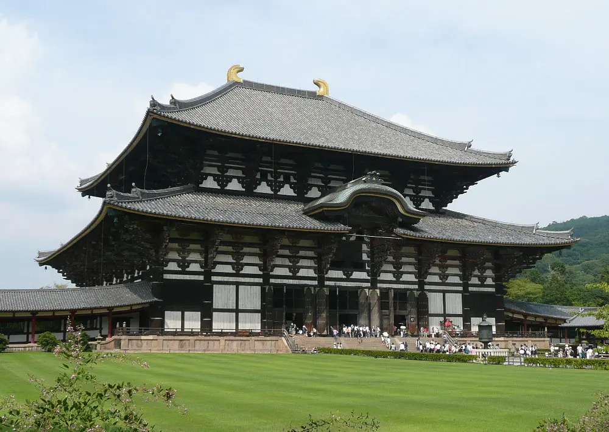
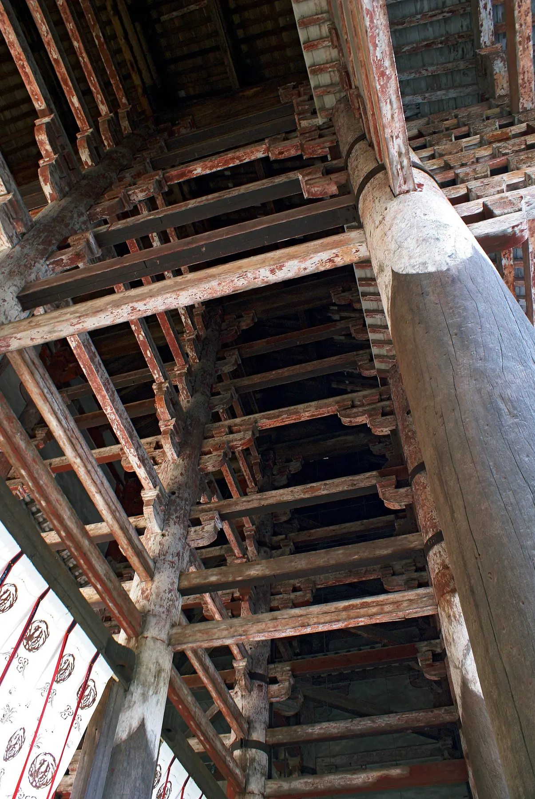
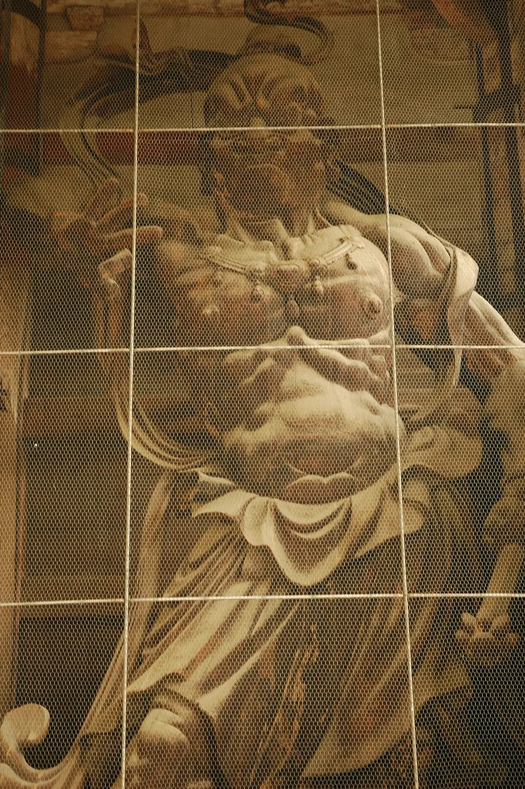
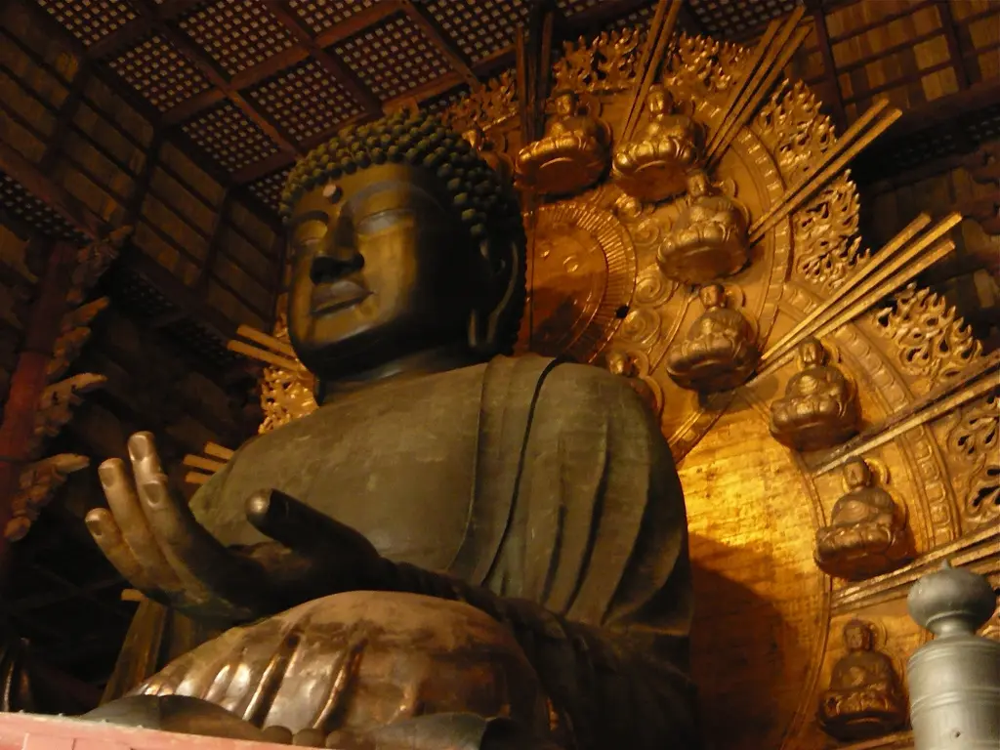
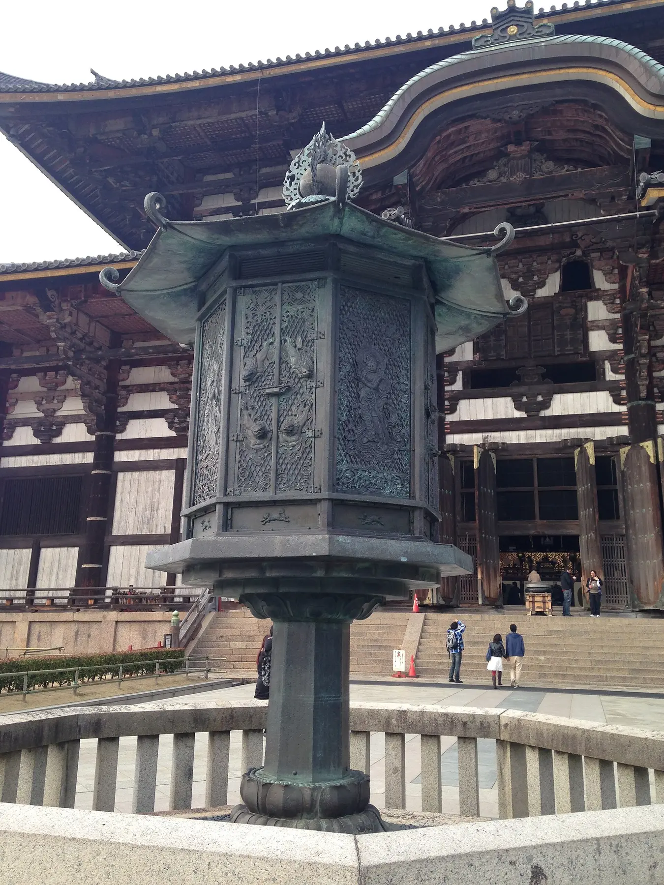
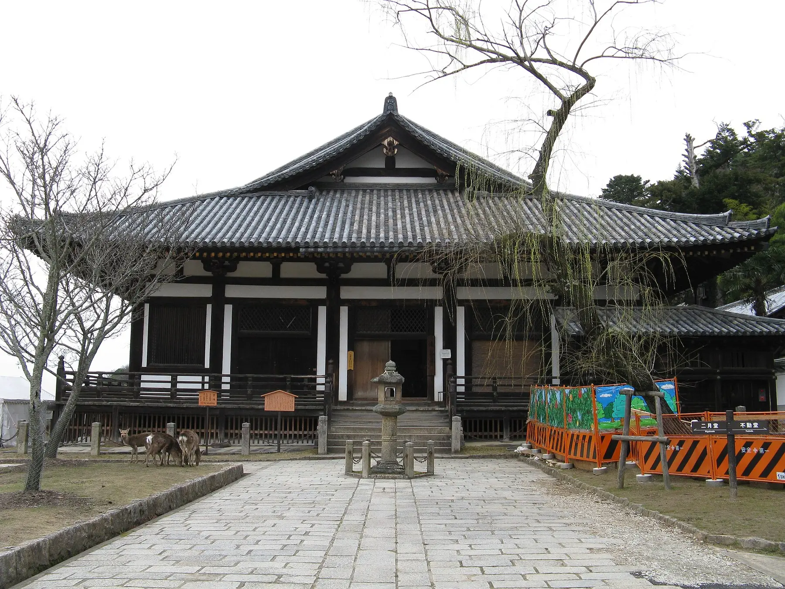
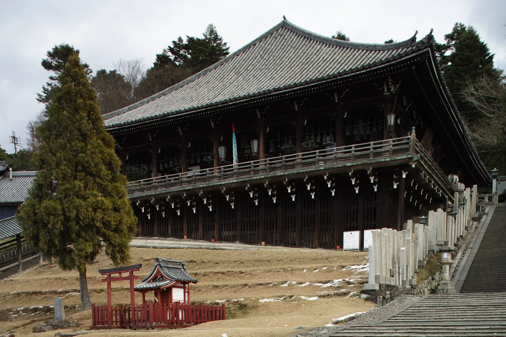
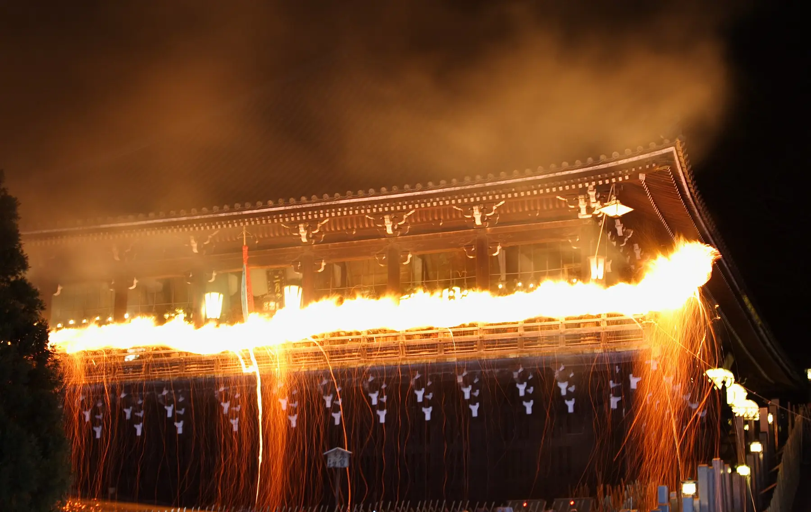

法華堂、戒壇堂

Visit intelligence
8月27日先處理時間衝突
官方資料核對至2026年7月23日；出發前48小時再查臨時閉館及8月25日後的新展品目錄。
現行行程：14:00–15:30
其中20分鐘原預留東大寺ミュージアム，寺院本體只餘70分鐘。
研究包完整線：3小時20分
包括戒壇堂、博物館、大佛殿、鐘樓、法華堂與二月堂。
我的判斷這個專頁已吸收博物館背景；若原物優先，當日可先刪20分鐘博物館，換成90分鐘寺院考察。完整線留作改行程時使用。
成人 ¥800
8/24換展休館；8/27按現公告開館
各堂分開 ¥800；大佛殿＋博物館 ¥1,200
Historical spine
四次把宗教願望變成工程
東大寺沒有一個單一的「原貌」。創建、燒毀、重建與近代補強共同構成今日的寺。
728–752
天平創建
由皇子追福到國家大佛
728年，聖武天皇為早逝的基親王設山房；741年國分寺制度建立，寺院升格為大和國金光明寺；743年頒盧舍那大佛造立詔。工程在紫香樂起步，745年移回奈良，749年完成佛身，752年舉行開眼供養。
天花疫症、藤原廣嗣之亂與頻繁遷都構成政治背景。詔書以「動植咸栄」和眾人結緣解釋工程，國家亦動員龐大銅、木、燃料、工匠與勞力。宗教理想與資源代價同時存在。
1180–1203
鎌倉復興
重源以新技術回應南都燒討
1180年平重衡南都燒討，大佛殿及大量伽藍焚毀。翌年，61歲的重源任大勸進，以募緣、政治支援與宋代技術組織重建；中國鑄物師陳和卿參與修補大佛。1185年再開眼，1195年大佛殿落慶，南大門與仁王像在1203年完成。
粗大貫材穿柱、結構外露的「大佛樣」，令巨大建築更快、更穩。慶派工房則以寄木與分工，在69日內完成兩尊8.4米金剛力士。
1567–1709
江戶續命
公慶把巨大理想縮成可完成的建築
1567年戰火再毀大佛殿，大佛露天近百年。公慶在1684年獲准募緣，1686年完成鑄補，1692年開眼，1709年現大佛殿落成。資金不足令殿寬由11間、約88米縮至7間、57.012米；高度和深度大致延續。
縮小沒有削弱歷史意義。這次重建顯示宗教共同體如何按現實資源保住核心。
1868→
制度保存
鋼構補強進入古建築，法會仍每天發生
明治初期神佛分離、寺領被收與廢佛毀釋再度削弱東大寺。1906–1912年大修加入鋼構補強；1973–1980年進行昭和大修。文化財制度、工程監測與日常宗教使用從此並行。
東大寺同時是世界遺產、國寶群、華嚴宗大本山與活寺院。部分佛像因防震移進博物館，部分堂內限制拍攝，背後都是「保存」與「使用」的協商。
發願與國家資源動員
初代別當與華嚴教學
民眾動員與結緣
印度僧；主持752年開眼
鎌倉復興的大勸進
江戶再興與長期募緣
Kegon lens
盧舍那佛是一個世界模型
華嚴把世界理解成互相依存、彼此映照的整體。任何一物都在其餘萬物的關係中成立。
盧舍那佛（るしゃなぶつ；Vairocana）意為光明遍照。大佛以十五米身軀壓過人的尺度，蓮座花瓣上的「蓮華藏世界圖」再把宇宙壓縮進細密線刻。巨像與微觀圖像要合看。
現場次序：先在中門與殿門看佛如何逐步佔滿視野；入殿後走到側面，看身體厚度、接縫與修補；最後回到蓮座，找世界圖。不要只拍正面臉。
無數世界
眾生與因緣
一即一切
盧舍那佛光明遍照
概念圖｜不臨摹受保護的蓮瓣線刻
Scale as history
現殿仍巨大，寬度只及古代約六成半
拖動控制，將1709年的七間大佛殿與創建／鎌倉十一間輪廓疊合。
創建／鎌倉 · 約88m · 11間
1709現殿 · 57.012m · 7間
高度48.742米、南北50.480米大致延續前代規模；資金限制主要改變正面寬度。
Route decision
先揀投入程度，再跟同一條觀看線
兩條路線不混在一起。90分鐘版配合現行27/8；3小時20分版用作真正完整考察。
適用前提用本頁取代東大寺ミュージアム快速補充；14:00由南大門開始，15:30往依水園。酷熱、排隊或堂內人多時，二月堂只看外部；15:18仍未離開法華堂便直接下山。
- 南大門門內仰視貫材；吽形側面看木塊與扭轉。
- 走向大佛殿由遠至近保留中軸視線，不在鹿群停留。
- 大佛殿八角燈籠 → 中軸 → 側面 → 蓮座；30分鐘是最低可接受投入。
- 上坡往法華堂補水；鐘樓只從路上看，不繞行。
- 法華堂不空羂索觀音整體、寶冠反光、不同材料表面與群像站位。
- 二月堂外部或立即下山只看舞台與儀式空間。15:30離開，步行往依水園。
適用前提至少預留3小時20分，並在16:00前完成戒壇堂與法華堂。西側早關門堂宇先做，再回中軸，最後一路向東上坡。
- 南大門先讀結構，再比較阿形、吽形。
- 戒壇院戒壇堂四天王逐尊比較表情、重心、甲冑與泥塑表面。
- 東大寺ミュージアム略過年表；集中看泥、木、銅、漆的差異。
- 大佛殿由門外軸線走到近身修補層。
- 鐘樓大佛樣與禪宗樣混合；先在本頁聽聲音。
- 法華堂八臂、寶冠、群像與天平—鎌倉建築接縫。
- 二月堂舞台、樓梯、局與聲學如何服務修二會。
- 步行及緩衝夏季飲水、排隊、上坡與短休。
Field chapters
逐站深讀：每一站只帶一個主問題
現場模式會把每章壓成三個觀察點；研讀模式保留工程、技法與史料界線。

663highland攝 · CC BY 2.5 ↗
01
先看工程，再看肌肉
門高25.46米，18條圓柱直達屋架，柱長19.058米。外觀看似兩層，內部沒有一般樓板；粗大水平貫材穿過柱身，把柱列鎖成整體。這種結構坦白、節點密集的語言，就是「大佛樣」。
兩尊8.4米金剛力士由運慶、快慶、定覺、湛慶及龐大工房並行製作。1988–1993年解體修理發現胎內經卷、墨書與工匠名，推翻「一位大師獨造」的舊想像。69日工期反映寄木、分工與現場組裝的成熟。
- 站在門內向上，看「外兩層、內一層通高」。
- 看穿柱的貫材如何對抗巨大屋頂的水平力。
- 由吽形側面看胸腹扭轉、木塊拼接與深龕陰影。
可拍攝；勿阻塞門道。金剛力士的表情按低光、仰視與遠距離設計。

02
受戒制度與四種泥塑身體
754年鑑真在大佛殿前設臨時戒壇，為聖武太上天皇、光明皇太后、孝謙天皇等授戒，後移至現址。受戒讓僧尼身分與戒律傳承獲得公認效力；戒壇堂因此是一套宗教資格制度的空間。
現堂屬江戶重建，四天王卻是八世紀國寶塑像。木骨纏草繩，再分層敷泥，最後用細泥捏出眼皮、面頰、手指與衣褶。四像原屬法華堂早期群像的說法很有力，但仍屬研究重構。
持國天 · 東劍；怒目、身體前傾
增長天 · 南長兵器；動勢與甲片轉折
廣目天 · 西筆與卷；神情較內斂
多聞天 · 北寶塔；重心最穩
堂內禁止攝影、寫生及使用電筒。四天王不宜逐尊選美；比較群像節奏。
材料提示塑造（そぞう）
泥的可塑性保留壓、捏、抹的微細過渡；別用木雕刀痕作觀看標準。

WordRidden攝 · CC BY 3.0 ↗
03
宇宙佛、分段鑄銅與跨年代修補
盧舍那大佛高約14.98米，面長5.33米，眼長1.02米，耳長2.54米。八世紀工程先造內外土模，在兩模之間留下銅壁空間，再由下而上分段澆鑄；佛身歷八次鑄接。
地震、火災與戰亂反覆破壞巨像。今日佛身含不同時代的補鑄，金屬色、接縫、比例與表面差異正是修復史的實物證據。原真性落在延續與修補過程。
- 中門外先看57米寬殿身；記住古代約88米。
- 入殿後先停中軸，讓眼睛適應明暗差。
- 走到側面看手掌厚度、蓮座線刻與不同年代金屬表面。
可作一般紀念攝影；禁三腳架、群體阻塞、寫生與電筒。寺方限制圖片商業及未經許可的二次使用。

04
讓26.3噸金屬讀出建築混合語言
榮西接替重源後重建鐘樓，把大佛樣粗獷貫材與禪宗樣細節放在同一木構。梵鐘高3.86米、口徑2.71米、重26.3噸，相傳752年鑄成；餘韻長，稱「奈良太郎」。它曾在1070、1096年地震墜落，1239年龍頭斷裂後修理。
- 看屋頂出簷重量與四面開放鐘架的張力。
- 找粗大貫材與較細密禪宗樣節點。
- 看鐘口、懸掛點與撞木，想像巨大金屬如何延長餘韻。
一般日子每晚20:00撞鐘；8月27日行程不會留到晚上，先在聲音章試聽。
撞擊長餘韻

KENPEI攝 · CC BY-SA 3.0 ↗
05
把天平群像當成儀式空間
法華堂是東大寺現存最古建築。後方正堂屬奈良時代，前方禮堂由重源在1199年重建，兩部分後來接成一體。建築本身已把天平與鎌倉復興疊合。
本尊不空羂索觀音高362.1厘米，三眼八臂，以脫活乾漆製成：先在泥胎貼麻布、層層髹漆，乾後抽掉泥心，再用木構補強。銀製寶冠高約88厘米、重約11公斤，嵌逾萬顆珠玉。低光下的碎亮，本來就是觀看效果的一部分。
- 由禮堂望正堂，看兩時代建築接合。
- 先讀本尊剪影，再辨三眼、八臂、鹿皮、羂索與蓮華。
- 比較乾漆本尊、泥塑侍立像與後來木造像的表面。
堂內禁止攝影、寫生及使用電筒。執金剛神每年12月16日才開扉，8月27日看不到。
06
建築為不中斷的修二會塑形
修二會正式名稱是「十一面悔過」，由實忠在752年創始，2026年為第1,275次。十一名練行眾在十一面觀音前代眾生懺悔，祈求天下泰安、五穀豐穰與災害消除。戰火或失火後仍在臨時堂繼續，「不退の行法」指向持續實踐。
現堂因1667年儀式期間失火而在1669年重建。內陣、外陣、禮堂、局、樓梯與舞台逐步回應儀式的人流、奔走、聲明、火與水。8月沒有修二會，空間仍保存其聲學與動線。
- 看舞台、樓梯與局如何控制出入與視線。
- 把奈良盆地放回寺院地理，避免把舞台只當觀景點。
- 先聽華嚴聲明，再想像木構如何放大多僧合聲。
堂內禁止攝影、寫生及使用電筒；舞台周邊禁三腳架。

Ignis攝 · CC BY-SA 2.5 ↗
Material microscope
先認技法，現場才看得到表面差異
按材料篩選下方文物。每種工法都把重量、震動、成本與修理問題帶進成品。
木骨 → 草繩 → 粗泥 → 細泥 → 彩色
優勢是細微塑形；弱點是重、脆、怕震。看眼皮、面頰、手指與衣褶的柔軟過渡。
泥胎 → 麻布髹漆 → 抽泥 → 木構補強
較泥塑輕，材料與人工極昂貴。看漆層形成的連續曲面、貼附裝飾與空心結構。
多木塊分工雕刻 → 組裝 → 表面整合
容許大型造像並行製作，也方便乾燥、搬運與修理。看接合、深鑿衣紋與外張動勢。
內外模 → 留銅壁 → 分段澆鑄 → 補鑄
巨像的技術問題在熱、流動、收縮與接縫。看金屬色、厚度、鑄接與後代修補。
Museum replacement room
把標籤先讀完，入館只看材質
常設核心有把握；8月25日後輪換展品仍待新目錄。頁面不會把6–7月「東大寺の法相宗」誤寫成8月展覽。
展覽狀態8/24展示替休館8/27按現公告開館8/25–26更新當期展品目錄
千手觀音菩薩立像
博物館本尊。多臂由正面分層展開，以有限手臂表達無限救濟能力。現場看殘彩、木肌與手臂組裝節奏。
日光菩薩立像
傳統名稱或非原身分；梵天／帝釋天說有影響力。看較密衣褶、張力較強的肩腰與雙手。
月光菩薩立像
與日光成對而非鏡像。衣褶較柔，氣息較靜；依臉、手、肩線、腰部重心、鞋履順序比較。
誕生釋迦佛與灌佛盤
浴佛儀式用具。小像與大型盤的比例來自使用方式；看鑄造細節、金層與指天指地姿勢。
菩薩半跏像
小型金銅佛的精密世界。看寶冠、面相、膝部與衣紋如何在細尺度維持清晰。
釋迦／多寶如來坐像
源自《法華經》二佛並坐。看兩像姿勢、比例、背光與共享空間的成對設計。
辯才天、吉祥天
原屬法華堂；泥塑對震動極敏感。看殘色、服飾層次與兩位女性神格不同的身體語言。
持國天、多聞天
與戒壇堂奈良泥塑四天王作跨年代比較：木雕刀法、較深衣紋與外張動勢如何改變守護神。
Evidence boundary
法華堂群像曾經移動：已知與推論分開看
2010–2013年修理在八角壇下發現舊像座痕跡。研究者據此重構早期群像；位置與身分仍有未定之處。
不空羂索觀音乾漆 · 現在本尊
梵天／帝釋天現存群像
金剛力士現存群像
四天王現存群像
日光／月光現於博物館 · 可能原置
戒壇堂四天王可能屬早期群像
執金剛神秘佛 · 原位置仍研究中
現存／史料確定根據壇下痕跡等作出的研究推論
Sound, ritual, scale
東大寺也要用耳朵理解
所有媒體由原發布者提供；不自動播放、不下載重傳。先聽，現場保持安靜。

華嚴宗聲明
多位僧侶把「甲／乙」高低音疊合。先聽五段示例，再想像二月堂木構與內外陣如何承接聲音。
日本藝術文化振興會播放器 ↗奈良太郎
先聽撞擊後的低頻與長餘韻。錄影可補足撞木動作；現場重點仍是鐘、屋架與懸掛關係。
試聽鐘聲 ↗大佛お身拭い
看清潔者在佛身上的比例，十五米由抽象數字變成可見身體尺度。影片只作空間預習。
開啟360°影片 ↗1972年修二會現地錄音
約28分鐘解說與28分鐘聲明。網站只連購買頁，不擷取錄音。
錄音資料與購買 ↗Sources & rights
事實、推論與圖像逐項留源
公開GitHub Pages只使用已核實CC圖片與原發布者播放器。東大寺官網、Nippon.com及館藏圖只作外連研究來源。
研究界線
「戒壇堂四天王可能原置法華堂」、「日光／月光可能是梵天／帝釋天」與法華堂原初群像位置，頁面一律標作研究推論。尺寸、年代、開館與寺史由官方來源控制。
圖片授權
八張本地圖片均來自Wikimedia Commons。作者、檔案頁與CC版本列在每張圖片旁；完整清單見 media manifest。本頁對相片只作尺寸壓縮、裁切顯示及色彩管理。
27/8更新清單
出發前48小時重查：臨時閉館、法華堂／戒壇堂16:00安排、博物館新展品目錄、奈良天氣與步行狀態。正倉院只可從外圍觀看，寶物沒有在倉內向遊客展示。